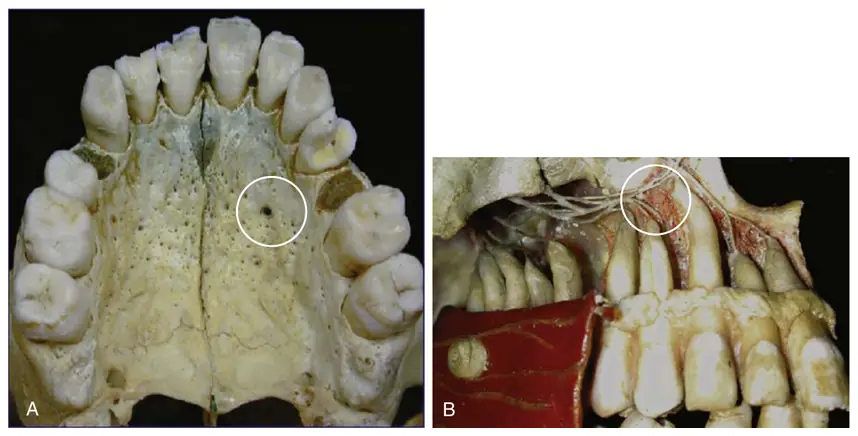
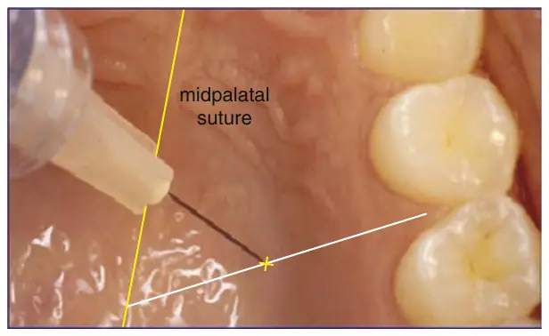

نسخه استخراجشده؛ ترجمه یا تأیید علمی انجام نشده است. وضعیت: captured
خانمی ۳۲ ساله برای ونیر کامپوزیتی از سانترال تا پرمولر دوم راست آمده است. میخواهی وسط کار خط لبخندش را ببینی، ولی با اینفیلتراسیونهای باکال لب بالایش بیحس و بیحرکت میشود. راه دیگری هست؟

بله، بلاک عصب آلوئولار فوقانی قدامی و میانی (AMSA). با یک تزریق در کام، پالپ سانترال تا پرمولر دوم همان طرف بیحس میشود، ولی لب بالا و عضلات حالت چهره بیحس نمیشوند.
شاخههای عصب آلوئولار فوقانی قدامی (ASA) و میانی (MSA) و شبکهی عصبی دندانی آنها (subneural dental plexus) نزدیک اپکس پرمولرها به هم میرسند؛ دهانهی بینی و سینوس ماگزیلاری آنها را به این ناحیه میرانند. محلولی که روی کام همین ناحیه بنشیند از کانالهای تغذیهای و استخوان متخلخل کام میگذرد و این شبکه را فرامیگیرد. پس AMSA در اصل یک field block است. عصب MSA در بسیاری از افراد نیست، ولی شبکهی دندانی همیشه هست.
سوزن: کوتاه، گیج ۲۷. نقطهی ورود: روی کام سخت، وسط خط سوچور میانی کام تا لبهی لثهی آزاد، همتراز نقطهی تماس پرمولر اول و دوم.

نشانهی موفقیت: سفیدی کام و لثهی چسبندهی باکال تا پرمولر، و لب بالای بیحسنشده. سانترال و لترال گاهی تزریق تکمیلی از کام یا PDL میخواهند.
اشتباه رایج: تزریق تند یا اپینفرین ۱:۵۰٬۰۰۰. هر دو ایسکمی شدید میدهند؛ زخم کامی ۱ تا ۲ روز بعد میآید و در ۵ تا ۱۰ روز خودبهخود خوب میشود.